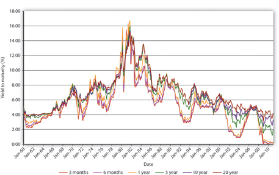
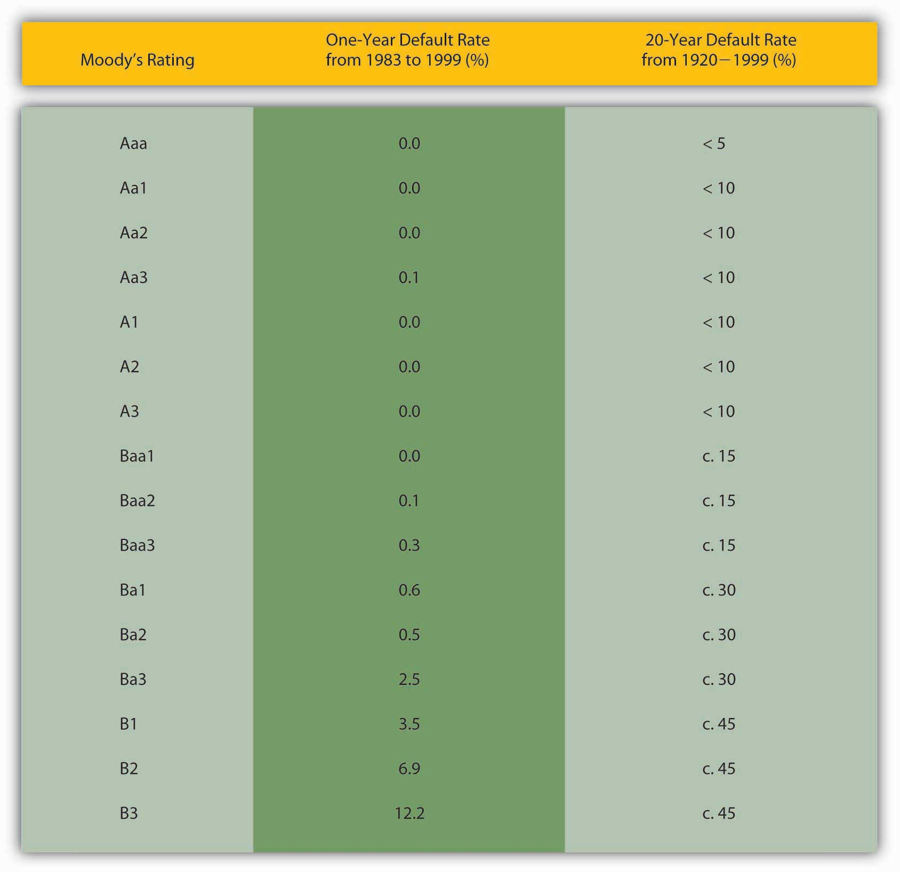
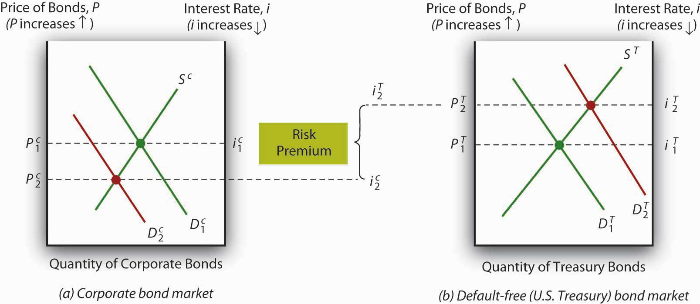
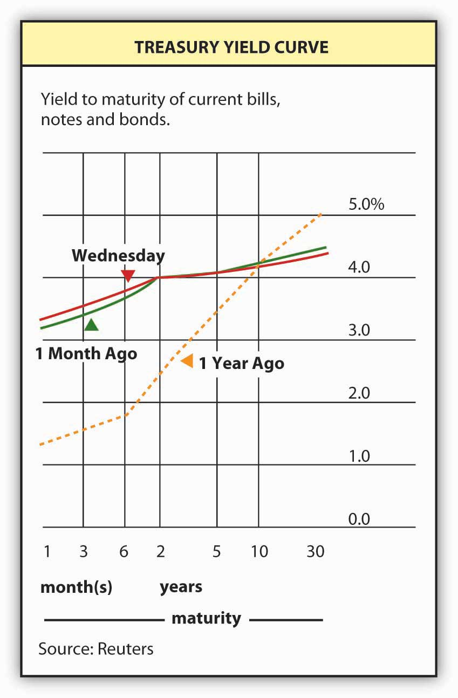

By the end of this chapter, students should be able to:
In this chapter, we’re going to figure out, as best we can, why yields on different types of bonds differ. The analysis will help us to understand a couple of stylized facts derived from the history of interest rates and Figure 6.1 "The risk structure of interest rates in the United States, 1919–2010" and Figure 6.2 "The term structure of interest rates in the United States, 1960–2010":
Figure 6.1 The risk structure of interest rates in the United States, 1919–2010

Figure 6.2 The term structure of interest rates in the United States, 1960–2010
Figure 6.1 "The risk structure of interest rates in the United States, 1919–2010", which holds maturity constant, is the easiest to understand because we’ve already discussed the major concepts. We’ll tackle it, and what economists call the risk structure of interest rates, first. Investors care mostly about three things: risk, return, and liquidity. Because the bonds in Figure 6.1 "The risk structure of interest rates in the United States, 1919–2010" are all long-term bonds, their expected relative returns might appear at first glance to be identical. Investors know, however, that bonds issued by different economic entities have very different probabilities of defaulting. Specifically, they know the following:
Figure 6.3 Default rates on bonds rated by Moody’s from 1983 to 1999
Equipped with this knowledge, we can easily understand the reasons for the rank ordering in Figure 6.1 "The risk structure of interest rates in the United States, 1919–2010".Figure 6.3 "Default rates on bonds rated by Moody’s from 1983 to 1999", by the way, should not be taken as evidence that credit rating agencies provide investors with useful information. Before 1970 or so, they sold ratings to investors and generally did a good job of ranking risks in a competitive market for ratings. Thereafter, however, they formed a government-sanctioned oligopoly and began to charge issuers for ratings. The resulting conflict of interest degraded the quality of ratings to the point that the big three rating agencies failed to predict the crises of 1997–98 in Southeast Asia and 2008 in the United States and Europe. Today, few investors still take their ratings seriously, as evidenced by the fact that Treasury bond prices actually increased after U.S. government bonds were downgraded by credit rating agency Standard and Poor’s in August 2011. Corporate Baa bonds have the highest yields because they have the highest default risk (of those graphed), and the markets for their bonds are generally not very liquid. Corporate Aaa bonds are next because they are relatively safer (less default risk) than Baa bonds and they may be relatively liquid, too. U.S. Treasuries are extremely safe and the markets for them are extremely liquid, so their yields are lower than those of corporate bonds. In other words, investors do not need as high a yield to own Treasuries as they need to own corporates. Another way to put this is that investors place a positive risk premium (to be more precise, a credit or default risk, liquidity, and tax premium) on corporate bonds.
Corporate bond ratings go all the way down to C (Moody’s) or D (Standard and Poor’s). (These used to be called high-yield or junk bonds but are now generally referred to as B.I.G. or below investment grade bonds.) If plotted on Figure 6.1 "The risk structure of interest rates in the United States, 1919–2010", where would the yields of such bonds land? How do you know?
They would have higher yields and hence would be above the Baa line because they would have a higher default risk, the same tax treatment, and perhaps less liquidity.
The low yield on munis is best explained by their tax exemptions. Before income taxes became important, the yield on munis was higher than that of Treasuries, as we would expect given that Treasuries are more liquid and less likely to default. During World War II, investors, especially wealthy individuals, eager for tax-exempt income and convinced that the fiscal problems faced by many municipalities during the depression were over, purchased large quantities of municipal bonds, driving their prices up (and their yields down). Almost all the time since, tax considerations, which are considerable given our highest income brackets exceed 30 percent, have overcome the relatively high default risk and illiquidity of municipal bonds, rendering them more valuable than Treasuries, ceteris paribus.
Figure 6.4 Risk premiums and bond spreads during the Great Depression, 1929–1939

Risk, after-tax returns, and liquidity also help to explain changes in spreads, the difference between yields of bonds of different types (the distance between the lines in Figure 6.1 "The risk structure of interest rates in the United States, 1919–2010" and Figure 6.4 "Risk premiums and bond spreads during the Great Depression, 1929–1939"). The big spike in Baa bond yields in the early 1930s, the darkest days of the Great Depression, was due to one simple cause: companies with Baa bond ratings were going belly-up left and right, leaving bondholders hanging. As Figure 6.4 "Risk premiums and bond spreads during the Great Depression, 1929–1939" shows, companies that issued Aaa bonds, municipalities, and possibly even the federal government were also more likely to default in that desperate period, but they were not nearly as likely to as weaker companies. Yields on their bonds therefore increased, but only a little, so the spread between Baa corporates and other bonds increased considerably in those troubled years. In better times, the spreads narrowed, only to widen again during the so-called Roosevelt Recession of 1937–1938.
Figure 6.5 The flight to quality (Treasuries) and from risk (corporate securities)
During crises, spreads can quickly soar because investors sell riskier assets, like Baa bonds, driving their prices down, and simultaneously buy safe ones, like Treasuries, driving their prices up. This so-called flight to quality is represented in Figure 6.5 "The flight to quality (Treasuries) and from risk (corporate securities)".
In the confusion following the terrorist attacks on New York City and Washington, DC, in September 2001, some claimed that people who had prior knowledge of the attacks made huge profits in the financial markets. How would that have been possible?
The most obvious way, given the analyses provided in this chapter, would have been to sell riskier corporate bonds and buy U.S. Treasuries on the eve of the attack in expectation of a flight to quality, the mass exchange of risky assets (and subsequent price decline) for safe ones (and subsequent price increase).
Time for a check of your knowledge.
Now we are going to hold the risk structure of interest rates—default risk, liquidity, and taxes—constant and concentrate on what economists call the term structure of interest rates, the variability of returns due to differing maturities. As Figure 6.2 "The term structure of interest rates in the United States, 1960–2010" reveals, even bonds from the same issuer, in this case, the U.S. government, can have yields that vary according to the length of time they have to run before their principals are repaid. Note that the general postwar trend is the same as that in Figure 6.1 "The risk structure of interest rates in the United States, 1919–2010", a trend upward followed by an equally dramatic slide. Unlike Figure 6.1 "The risk structure of interest rates in the United States, 1919–2010", however, the ranking of the series here is much less stable. Sometimes short-term Treasuries have lower yields than long-term ones, sometimes they have about the same yield, and sometimes they have higher yields.
To study this phenomenon more closely, economists and market watchers use a tool called a yield curve, which is basically a snapshot of yields of bonds of different maturities at a given moment. Figure 6.6 "Treasury yield curve" is what the Treasury yield curve looks like as reported by Reuters. The current yield curve can also be viewed many places online, including Bloomberg, the Wall Street Journal, and the U.S. Treasury itself.www.bloomberg.com/markets/rates/index.html;www.ustreas.gov/offices/domestic-finance/debt-management/interest-rate/yield.shtml What observers have discovered is that the yields of bonds of different maturities (but identical risk structures) tend to move in tandem. They also note that yield curves usually slope upward. In other words, short-term rates are usually lower than long-term rates. Sometimes, however, the yield “curve” is actually flat—yields for bonds of different maturities are identical, or nearly so. Sometimes, particularly when short-term rates are higher than normal, the curve inverts or slopes downward, indicating that the yield on short-term bonds is higher than that on long-term bonds. And sometimes the curve goes up and down, resembling a sideways S (sometimes tilted on its face and sometimes its back) or Z. What explains this? (Remember, it can’t be tax, default, or liquidity risk because those variables are all the same for Treasuries.)
Figure 6.6 Treasury yield curve
Theory and empirical evidence both point to the same conclusion: bonds of different maturities are partial substitutes for each other, not perfect substitutes, but not completely segmented either. Generally, investors prefer short-term bonds to long-term ones, but they reverse their preference if the interest rate goes unusually high. Investors are willing to pay more for short-term bonds, other factors (like “the” interest rate and the risk structure) held constant, because longer-term bonds are more subject to interest rate risk. Or, to put it another way, investors need a premium (in the form of a lower price or higher yield) to hold long-term bonds. (This notion has been called liquidity preferenceThe name of one of the theories that economists use to explain the yield curve that emphasizes the fact that investors typically prefer more liquid, shorter-term bonds to longer-term ones. because it stresses that investors prefer shorter-term or more liquid bonds.) Ergo, the yield curve usually slopes upward, as it does in Figure 6.6 "Treasury yield curve".
But what about those times when the curve is flat or inverted? Investors give up their preference for short-term bonds when they expect a high interest rate for a short period. (This idea has been called preferred habitatThe name of one of the theories that economists use to explain the yield curve that emphasizes the fact that short- and long-term bonds are partial substitutes; investors’ usual preference for short-term bonds can be reversed under some circumstances, like when interest rates are thought to be temporarily high. because it suggests that short and long term bonds are, to some extent, substitutes, and whichever is preferred can change under the right circumstances or in the right habitat.) Investors can think of a long-term bond yield as the average of the yields on shorter-term obligations, so when the interest rate is high by historical norms but expected after a year or so to revert to some long-term mean, they will actually begin to prefer long-term bonds and will buy them at much higher prices (lower yields) than short-term bonds, which is in anticipation of relatively large price increases in long-term bonds when interest rates decrease. More formally, investors believe that
where
in = interest rate today on a bond that matures in n years
iex = expected interest rate at time × (0, 1, 2, 3,…through n)
ρ = the liquidity or term premium for an n-period bond (it is always positive and increases with n)
So the yield today of a bond with 5 years to maturity, if the liquidity premium is .5 percent and the expected interest rate each year is 4, is 4.5:
i5 = (4 + 4 + 4 + 4 + 4)/5 + .5 = 20/5 + .5 = 4.5, implying an upward sloping yield curve because 4 < 4.5.
If the interest rate is expected to rise over the next 5 years, the yield curve slopes upward yet more steeply:
i5 = (4 + 5 + 6 + 7 + 8)/5 + .5 = 30/5 + .5 = 6.5, again implying an upward sloping curve because 4 < 6.5.
If, on the other hand, interest rates are expected to fall over the next 5 years, the yield curve will slope downward, as in this example:
i5 = (12 + 10 + 8 + 5 + 5)/5 + .5 = 40/5 + .5 = 8.5, implying an inverted yield curve because 12 > 8.5.
Investors may also realize that long-term bonds will increase in price when interest rates fall (as they are expected to do in this example and as we learned in Chapter 3 "Money"), so they are willing to pay more for them now.
In the nineteenth century, the yield curve was usually flat under normal conditions. (It inverted during financial panics.) In other words, short-term and long-term bonds issued by the same economic entity did not often differ much in price. Why might that have been?
One possibility is that there was no liquidity premium then. Then, as now, short-term bonds suffered less interest rate risk than long-term bonds, but investors often complained of extremely high levels of reinvestment risk, of their inability to easily and cheaply reinvest the principal of bonds and mortgages when they were repaid. Often, lenders urged good borrowers not to repay (but to continue to service their obligations, of course). Another not mutually exclusive possibility is that the long-term price level stability engendered by the specie standard made the interest rate less volatile. The expectation was that the interest rate would not long stray from its long-term tendency.
The neat thing about this theory is that it reveals the yield curve as the market’s prediction of future short-term interest rates, making it, by extension, an economic forecasting tool. Where the curve slopes sharply upward, the market expects future short-term interest rates to rise. Where it slopes slightly upward, the market expects future short-term rates to remain the same. Where the curve is flat, rates, it is thought, will fall moderately in the future. Inversion of the curve means short-term interest rates should fall sharply, as in the numerical example above. The simplest way to remember this is to realize that the prediction equals the yield curve minus ρn, the term premium.
Empirical research suggests that the yield curve is a good predictor of future interest rates in the very short term, the next few months, and the long term, but not in between. Part of the difficulty is that ρn is not well understood nor is it easily observable. It may change over time and/or not increase much from one maturity to the next on the short end of the curve. Nevertheless, economic forecasters use the yield curve to make predictions about inflation and the business cycle. A flat or inverted curve, for instance, portends lower short-term interest rates in the future, which is consistent with a recession but also with lower inflation rates, as we learned in Chapter 5 "The Economics of Interest-Rate Fluctuations". A curve sloped steeply upward, by contrast, portends higher future interest rates, which might be brought about by an increase in inflation rates or an economic boom.
Time once again to ensure that we’re on the same page, er, Web site.
What does the following yield curve tell us?
Treasury yield curve for January 20, 2006.
| Maturity | Yield (%) |
|---|---|
| 1 month | 3.95 |
| 3 months | 4.35 |
| 6 months | 4.48 |
| 1 year | 4.44 |
| 2 years | 4.37 |
| 3 years | 4.32 |
| 5 years | 4.31 |
| 7 years | 4.32 |
| 10 years | 4.37 |
| 20 years | 4.59 |
What does the following yield curve predict?
Treasury yield curve for July 31, 2000.
| Maturity | Yield (%) |
|---|---|
| 1 month | |
| 3 months | 6.20 |
| 6 months | 6.35 |
| 1 year | |
| 2 years | 6.30 |
| 3 years | 6.30 |
| 5 years | 6.15 |
| 7 years | |
| 10 years | 6.03 |
| 30 years | 5.78 |
Choudry, Moorad. Analysing and Interpreting the Yield Curve. Hoboken, NJ: John Wiley and Sons, 2004.
Fabozzi, Frank. Interest Rate, Term Structure, and Valuation Modeling. Hoboken, NJ: John Wiley and Sons, 2002.
Fabozzi, Frank, Steven Mann, and Moorad Choudry. Measuring and Controlling Interest Rate and Credit Risk. Hoboken, NJ: John Wiley and Sons, 2003.
Homer, Sidney, and Richard E. Sylla. A History of Interest Rates, 4th ed. Hoboken, NJ: John Wiley and Sons, 2005.